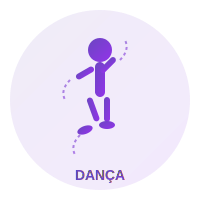
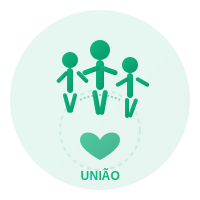
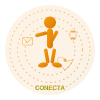

Seja voluntário!
Você acredita que a dança pode salvar vidas? Faça parte desse movimento com a gente!

Quem somos
A ONG PERIFA NO TOQUE nasceu em 2025 em Itaquaquecetuba, no Extremo Leste de São Paulo, dedicada a promover as danças urbanas como forma de expressão cultural e inclusão social.

Nossa Missão
Promover a cultura das danças urbanas como ferramenta de expressão, inclusão social e desenvolvimento pessoal para jovens da Zona Leste, oferecendo oficinas, eventos e espaços de convivência que incentivem criatividade, disciplina e trabalho em equipe.

Contato
Endereço: R. da Resistência, 123. Bairro Submundo, Itaquaquecetuba - SP
Telefone: (11) 9 8765-4321
Email: contato@ongpnt.org